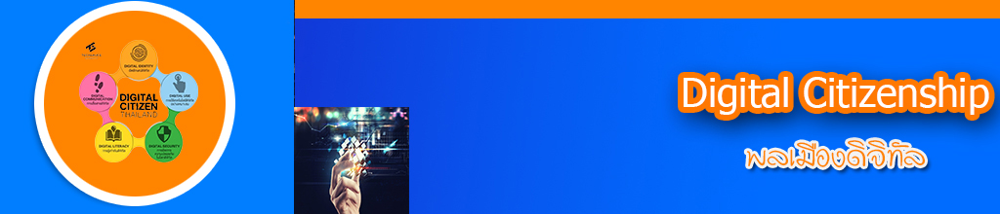

|  |
|
|
1. ทักษะการรักษาอัตลักษณ์ที่ดีของตัวเอง (Digital Citizen Identity) ความสามารถในการสร้างและจัดการภาพลักษณ์ของตนเองในสื่อโซเชียลในเชิงบวกภายใต้พื้นฐานความเป็นจริง รับผิดชอบในการกระทำ ไม่กระทำการผิดกฎหมายละเมิดจริยธรรม 2. ทักษะในการบริหารจัดการเวลาในโลกดิจิทัล (Screen Time Management) สามารถบริหารเวลาและควบคุมตนเองในโลกออนไลน์กับในชีวิตจริงได้อย่างสมดุล 3. ทักษะการรับมือการกลั่นแกล้งบนโลกไซเบอร์ (Cyberbullying Management) มีความสามารถในการรับมือ ป้องกัน และมีภูมิคุ้มกันกับการข่มขู่บนโลกไซเบอร์อย่างเหมาะสม ไม่ใช้อารมณ์ 5. ทักษะในการจัดการความเป็นส่วนตัว (Privacy Management) รักษาความเป็นส่วนตัวในโลกออนไลน์ของตนเองและผู้อื่นได้ เพื่อความปลอดภัยทางข้อมูล 7. ทักษะในการบริหารจัดการข้อมูล ร่องรอยทางดิจิทัล (Digital Footprint) สามารถในการคิด เข้าใจความเป็นไปในโลกดิจิทัลว่าจะทิ้งร่องรอยและประวัติไว้เสมอ ซึ่งอาจส่งผลต่อในอนาคตและการใช้ชีวิต 8. ทักษะการใช้เทคโนโลยีอย่างมีความเห็นอกเห็นใจและสร้างสัมพันธภาพที่ดีกับผู้อื่น (Digital Empathy) มีความเห็นอกเห็นใจ มีปฏิสัมพันธ์ที่ดีต่อกันในโลกออนไลน์ มีการช่วยเหลือซึ่งกันและกัน |